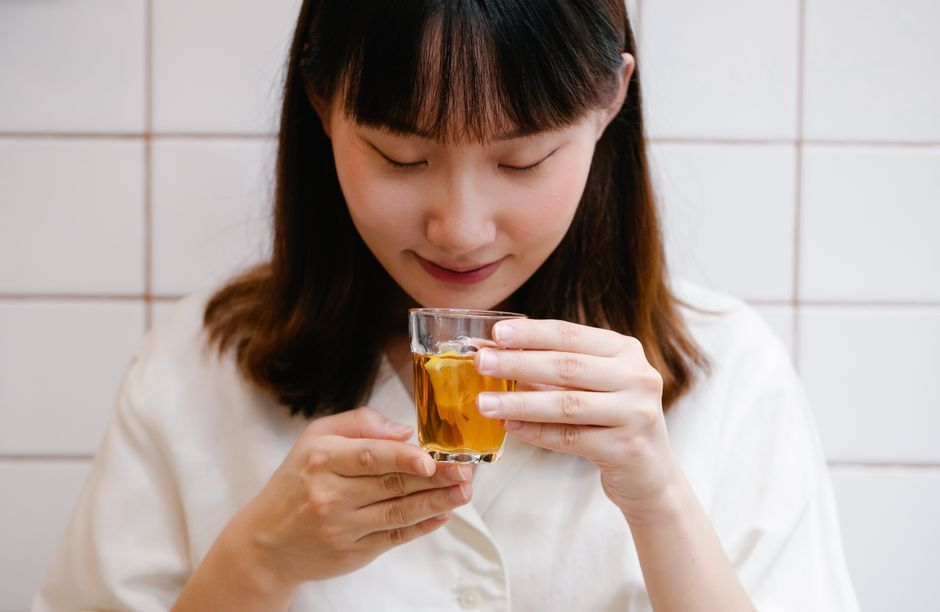

Inflammation
What Is Oxidative Stress? A Plain-English Guide
Oxidative stress is an imbalance between two kinds of molecules in your body: free radicals and antioxidants. It means there are too many free radicals and not enough antioxidants to steady them. Over time, the extra free radicals can damage your cells and tissues. It usually happens quietly, without symptoms you would notice.
What is oxidative stress, in plain English?
Think of a kitchen at the end of a long day. Cooking a meal always makes a mess, and that is normal. Trouble only comes when the mess builds faster than anyone can clean it up.
Cleveland Clinic describes oxidative stress as an imbalance in which excess free radicals begin to harm the parts of your cells, including the fats and proteins that let them work normally. Your body is not doing something wrong. It is carrying more than it can clear.
What are free radicals, and are they always bad?
Free radicals have a poor reputation, and it is only half deserved.
Your body turns the food you eat into energy. According to Cleveland Clinic, free radicals are a normal byproduct of that necessary process. They even support your immune system. You need them, but only at low or moderate levels.
The trouble is in how they are built. A free radical is an unstable molecule that is missing an electron. To become stable, it searches for an electron it can take from another molecule. When it takes one from a healthy molecule, that molecule becomes damaged and unstable in turn.
What do antioxidants do?
Antioxidants are natural substances found in the foods we eat. Cleveland Clinic explains that instead of taking electrons from healthy cells, an antioxidant gives one of its own to a free radical. The free radical becomes complete and stops taking from its neighbours.
I love the design in that. The answer to a molecule that takes is a molecule that gives. When there are not enough givers, the free radicals go looking, and oxidative stress is the result.
What causes oxidative stress?
Anything that raises free radicals to unhealthy levels can tip the balance. Cleveland Clinic lists these known examples:
- Environmental toxins around you
- Smoking and tobacco use
- Sun exposure
- Drinking too much alcohol
- Stress
That last one matters to me. So many of the people I sit with are doing their best with food and still living in a body that never gets to stand down. If that is you, there is no shame in it. I describe the daily signs in signs of inflammation in the body.
What are the symptoms of oxidative stress?
Often, there are none for a long while. Cleveland Clinic notes that oxidative stress involves tiny changes that go on behind the scenes, and when symptoms do appear, they vary widely depending on which part of the body is affected.
Researchers believe oxidative stress plays a role in many chronic conditions, and they are still uncovering what that means. This is not something you can test for at home or work out from a list. If you have symptoms that worry you, such as chest pain, shortness of breath, or lasting fatigue, please see your physician. I do not test for or identify medical conditions. That belongs with your doctor.
How can you reduce oxidative stress naturally?
Cleveland Clinic says that adding foods rich in antioxidants is one way to help, and it gives these examples:
- Vitamin C: citrus fruits, kiwi, strawberries, cantaloupe, bell peppers and broccoli
- Vitamin E: almonds, peanuts, hazelnuts, sunflower seeds, spinach and broccoli
- Selenium: seafood such as tuna and salmon, eggs, brown rice and whole-wheat bread
- Beta carotene: carrots, apricots, mangos, sweet potatoes and kale
Notice the variety. Cleveland Clinic is clear that no single antioxidant is a superfood. Many of them work together, which is why a colourful plate does more than any one ingredient. It also states that getting nutrients from food is generally best, and that supplements are something to discuss with your healthcare provider, not something to reach for on your own.
It also suggests avoiding tobacco and protecting your skin in the sun. Some exposures, like the air around you, are outside your control, and I never want you to carry guilt for those.
A gentle practice: at your next trip to the market, choose one fruit or vegetable in a colour you have not eaten this week. Wash it slowly. Eat it sitting down. You are not fixing anything. You are giving your body one more helper.
I go deeper on the plate itself in what foods help with inflammation. In my practice, inflammation support begins with gentle rhythms like these, within a wider approach of naturopathy and homeopathy for whole-person healing, always alongside your physician's care.
You can read the full Cleveland Clinic guide to oxidative stress.
Pause for Reflection
Place a hand on your heart. Let one slow breath go.

Where in your life is the load building faster than you can clear it? What is one small, kind thing you could add this week, instead of one more thing to take away?
"Behold, I have given you every herb bearing seed, which is upon the face of all the earth" (Genesis 1:29, KJV). Provision was part of the design from the beginning.
FAQ
What is the difference between free radicals and antioxidants?
Free radicals are unstable molecules that are missing an electron and take one from other molecules. Antioxidants give an electron to a free radical, which steadies it and helps protect your cells.
Can you feel oxidative stress?
Often you cannot. Cleveland Clinic explains that it involves microscopic changes behind the scenes, and you may have no symptoms for a long while.
Should I take antioxidant supplements?
Cleveland Clinic states that getting your nutrients from food is generally best. Supplements are a decision to make with your healthcare provider, who knows your history and your medicines.
How do I start working with you?
If you would like gentle, whole-person support for a body that has been carrying a heavy load, you can send me a message through my contact page, and we can talk about what would help.
This article is for educational purposes and is not medical advice. It is not intended to diagnose, treat, cure, or prevent any disease. Please work with a qualified practitioner, and consult your physician before making changes to your health routine.
In Renewal,
Lynette Wing
Founder of Renewal Health
Clinical Homeopath, Naturopath, Mind-Body Practitioner
Dedicated to root-cause healing and whole-person alignment. Guiding clients to emerge, align, and live fully, restoring vitality, clarity, and sustainable wellness. About Lynette